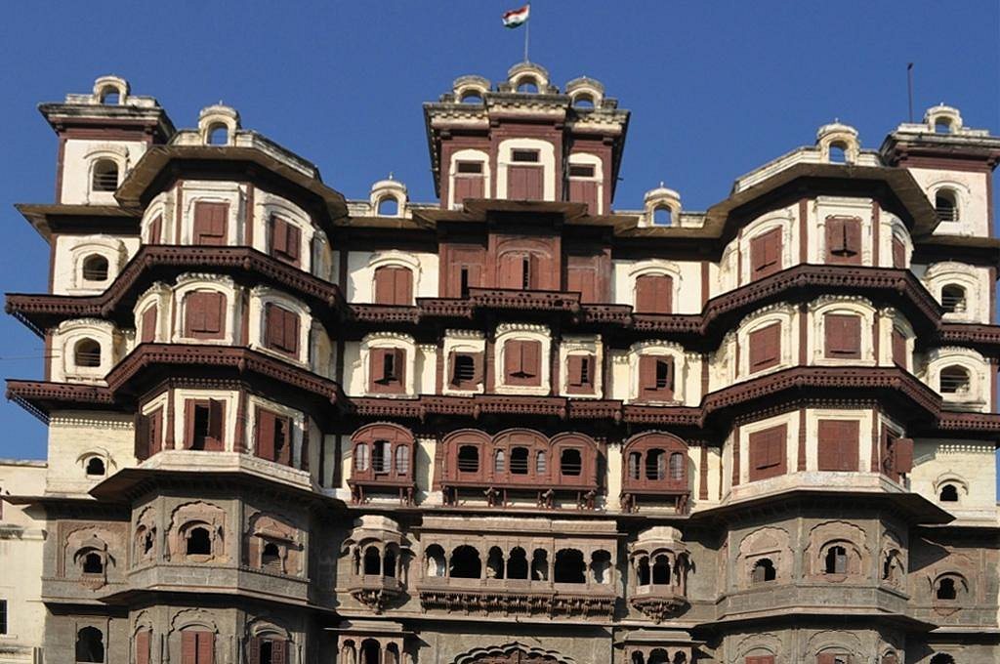
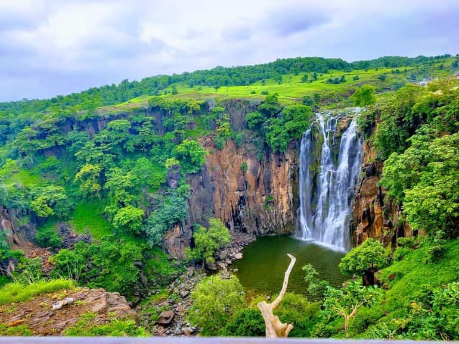

Top three activities to do at Indore

Visit Rajwada
Rajwada is the first building in India that was restored using the same materials and in the same style that it was originally constructed in.

Street Food
Indore is known for a large variety of deep-fried namkeens, such as chikkis, mathris, Indore sev, aloo bhujia, hing peanuts and khatta meetha

Patal Pani
The waterfall is approximately 300 feet high. The area around Patalpani is a popular picnic and trekking spot. The water flow is highest immediately after the rainy season